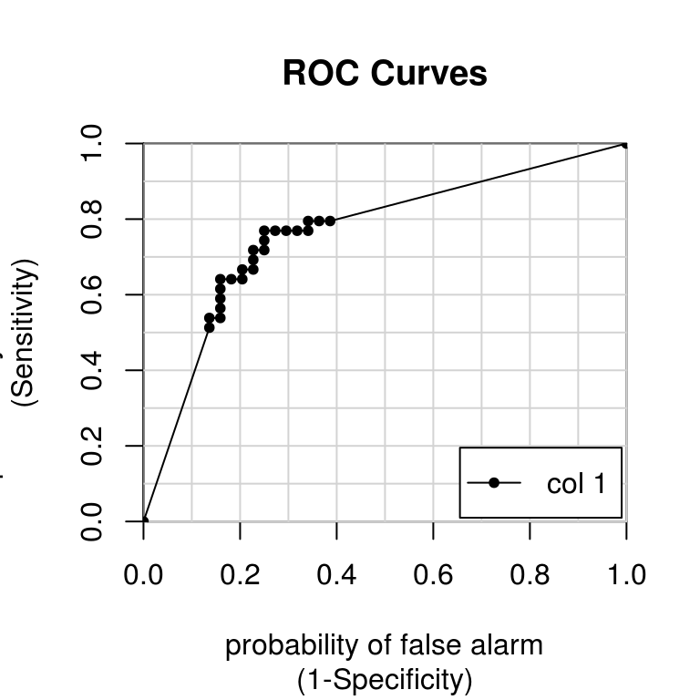

Chapter 3 Classification models: fitting them and evaluating their performance
In this chapter, you’ll fit classification models with train() and evaluate their out-of-sample performance using cross-validation and area under the curve (AUC).
Logistic regression on sonar video
Why a train/test split?
What is the point of making a train/test split for binary classification problems?
To make the problem harder for the model by reducing the dataset size.
To evaluate your models out-of-sample, on new data.
To reduce the dataset size, so your models fit faster.
There is no real reason; it is no different than evaluating your models in-sample.
3.1 Try a 60/40 split
As you saw in the video, you’ll be working with the Sonar dataset in this chapter, using a 60% training set and a 40% test set. We’ll practice making a train/test split one more time, just to be sure you have the hang of it. Recall that you can use the sample() function to get a random permutation of the row indices in a dataset, to use when making train/test splits, e.g.:
rows <- sample(nrow(my_data))And then use those row indices to randomly reorder the dataset, e.g.:
my_data <- my_data[rows, ]Once your dataset is randomly ordered, you can split off the first 60% as a training set and the last 40% as a test set.
Exercise
- Shuffle the row indices of
Sonarand store the result inrows.
library(mlbench)
data(Sonar)
# Shuffle row indices: rows
set.seed(421)
rows <- sample(nrow(Sonar))- Use
rowsto randomly reorder the rows ofSonar.
# Randomly order data
Sonar <- Sonar[rows, ]- Identify the proper row to split on for a 60/40 split. Store this row number as
split.
# Identify row to split on: split
split <- round(nrow(Sonar)*.60, 0)
split[1] 125- Save the first 60% as a training set.
# Create train
train <- Sonar[1:split, ]- Save the last 40% as the test set.
# Create test
test <- Sonar[(split+1):nrow(Sonar), ]3.2 Fit a logistic regression model
Once you have your random training and test sets you can fit a logistic regression model to your training set using the glm() function. glm() is a more advanced version of lm() that allows for more varied types of regression models, aside from plain vanilla ordinary least squares regression.
Be sure to pass the argument family = "binomial" to glm() to specify that you want to do logistic (rather than linear) regression. For example:
glm(Target ~ ., family = "binomial", dataset)Don’t worry about warnings like
glm.fit: algorithm did not converge or glm.fit: fitted probabilities numerically 0 or 1 occurredThese are common on smaller datasets and usually don’t cause any issues. They typically mean your dataset is perfectly separable, which can cause problems for the math behind the model, but R’s glm() function is almost always robust enough to handle this case with no problems.
Once you have a glm() model fit to your dataset, you can predict the outcome (e.g. rock or mine) on the test set using the predict() function with the argument type = "response":
predict(my_model, test, type = "response")Exercise
- Fit a logistic regression called
modelto predictClassusing all other variables as predictors. Use the training set forSonar.
# Fit glm model: model
model <- glm(Class ~ ., data = train, family = "binomial")Warning: glm.fit: algorithm did not convergeWarning: glm.fit: fitted probabilities numerically 0 or 1 occurred- Predict on the
testset using that model. Call the resultplike you’ve done before.
# Predict on test: p
p <- predict(model, newdata = test, type = "response")Confusion matrix video
Confusion Matrix
See https://en.wikipedia.org/wiki/Confusion_matrix for a table and formulas.
Confusion matrix takeaways
What information does a confusion matrix provide?
True positive rates
True negative rates
False positive rates
False negative rates
All of the above
3.3 Calculate a confusion matrix
As you saw in the video, a confusion matrix is a very useful tool for calibrating the output of a model and examining all possible outcomes of your predictions (true positive, true negative, false positive, false negative).
Before you make your confusion matrix, you need to “cut” your predicted probabilities at a given threshold to turn probabilities into a factor of class predictions. Combine ifelse() with factor() as follows:
pos_or_neg <- ifelse(probability_prediction > threshold, positive_class, negative_class)
p_class <- factor(pos_or_neg, levels = levels(test_values))confusionMatrix() in caret improves on table() from base R by adding lots of useful ancillary statistics in addition to the base rates in the table. You can calculate the confusion matrix (and the associated statistics) using the predicted outcomes as well as the actual outcomes, e.g.:
confusionMatrix(p_class, test_values)Exercise
- Use
ifelse()to create a character vector,m_or_rthat is the positive class,"M", whenpis greater than 0.5, and the negative class,"R", otherwise.
library(caret)
# Calculate class probabilities: p_class
m_or_r <- ifelse(p > 0.50, "M", "R")- Convert
m_or_rto be a factor,p_class, with levels the same as those oftest[["Class"]].
p_class <- factor(m_or_r, levels = levels(test[["Class"]]))
# OR
p_class <- factor(m_or_r, levels = c("M", "R"))- Make a confusion matrix with
confusionMatrix(), passingp_classand the"Class"column from thetestdataset.
# Create confusion matrix
caret::confusionMatrix(p_class, test$Class)Confusion Matrix and Statistics
Reference
Prediction M R
M 11 29
R 33 10
Accuracy : 0.253
95% CI : (0.1639, 0.3604)
No Information Rate : 0.5301
P-Value [Acc > NIR] : 1.0000
Kappa : -0.4907
Mcnemar's Test P-Value : 0.7032
Sensitivity : 0.2500
Specificity : 0.2564
Pos Pred Value : 0.2750
Neg Pred Value : 0.2326
Prevalence : 0.5301
Detection Rate : 0.1325
Detection Prevalence : 0.4819
Balanced Accuracy : 0.2532
'Positive' Class : M
# Using table()
table(p_class, test$Class)
p_class M R
M 11 29
R 33 10# Using xtabs()
xtabs(~p_class + test$Class) test$Class
p_class M R
M 11 29
R 33 10Exercise
Calculating accuracy—Use confusionMatrix(p_class, test[["Class"]]) to calculate a confusion matrix on the test set.
- What is the test set accuracy of this model (rounded to the nearest percent)?
RES <- caret::confusionMatrix(p_class, test[["Class"]])
RESConfusion Matrix and Statistics
Reference
Prediction M R
M 11 29
R 33 10
Accuracy : 0.253
95% CI : (0.1639, 0.3604)
No Information Rate : 0.5301
P-Value [Acc > NIR] : 1.0000
Kappa : -0.4907
Mcnemar's Test P-Value : 0.7032
Sensitivity : 0.2500
Specificity : 0.2564
Pos Pred Value : 0.2750
Neg Pred Value : 0.2326
Prevalence : 0.5301
Detection Rate : 0.1325
Detection Prevalence : 0.4819
Balanced Accuracy : 0.2532
'Positive' Class : M
RES$overall[1]Accuracy
0.253012 The accuracy of this model is 25.3%.
- What is the test set true positive rate (or sensitivity) of this model (rounded to the nearest percent)?
Sens <- round(RES[[4]]["Sensitivity"]*100, 1)
SensSensitivity
25 The test set sensitivity of this model is 25%.
- What is the test set true negative rate (or specificity) of this model (rounded to the nearest percent)?
Spec <- round(RES[[4]]["Specificity"]*100, 1)
SpecSpecificity
25.6 The test set specificity of this model is 25.6%.
Class probabilities and predictions video
Exercise
Probabilities and classes—What’s the relationship between the predicted probabilities and the predicted classes?
You determine the predicted probabilities by looking at the average accuracy of the predicted classes.
There is no relationship; they’re completely different things.
Predicted classes are based off of predicted probabilities plus a classification threshold.
3.4 Try another threshold
In the previous exercises, you used a threshold of 0.50 to cut your predicted probabilities to make class predictions (rock vs mine). However, this classification threshold does not always align with the goals for a given modeling problem.
For example, pretend you want to identify the objects you are really certain are mines. In this case, you might want to use a probability threshold of 0.90 to get fewer predicted mines, but with greater confidence in each prediction.
- Use
ifelse()to create a character vector,m_or_rthat is the positive class,"M", whenpis greater than 0.9, and the negative class,"R", otherwise.
# Apply threshold of 0.9
m_or_r <- ifelse(p > 0.90, "M", "R")- Convert
m_or_rto be a factor,p_class, with levels the same as those oftest[["Class"]].
p_class <- factor(m_or_r, levels = levels(test[["Class"]]))- Make a confusion matrix with
confusionMatrix(), passingp_classand the"Class"column from thetestdataset.
# Create confusion matrix
confusionMatrix(p_class, test[["Class"]])Confusion Matrix and Statistics
Reference
Prediction M R
M 10 27
R 34 12
Accuracy : 0.2651
95% CI : (0.1742, 0.3734)
No Information Rate : 0.5301
P-Value [Acc > NIR] : 1.0000
Kappa : -0.4603
Mcnemar's Test P-Value : 0.4424
Sensitivity : 0.2273
Specificity : 0.3077
Pos Pred Value : 0.2703
Neg Pred Value : 0.2609
Prevalence : 0.5301
Detection Rate : 0.1205
Detection Prevalence : 0.4458
Balanced Accuracy : 0.2675
'Positive' Class : M
3.5 From probabilites to confusion matrix
Conversely, say you want to be really certain that your model correctly identifies all the mines as mines. In this case, you might use a prediction threshold of 0.10, instead of 0.90.
- Use
ifelse()to create a character vector,m_or_rthat is the positive class,"M", whenpis greater than 0.1, and the negative class,"R", otherwise.
# Apply threshold of 0.1
m_or_r <- ifelse(p > 0.10, "M", "R")- Convert
m_or_rto be a factor,p_class, with levels the same as those oftest[["Class"]].
p_class <- factor(m_or_r, levels = levels(test[["Class"]]))- Make a confusion matrix with
confusionMatrix(), passingp_classand the"Class"column from thetestdataset.
# Create confusion matrix
confusionMatrix(p_class, test[["Class"]])Confusion Matrix and Statistics
Reference
Prediction M R
M 11 30
R 33 9
Accuracy : 0.241
95% CI : (0.1538, 0.3473)
No Information Rate : 0.5301
P-Value [Acc > NIR] : 1.0000
Kappa : -0.517
Mcnemar's Test P-Value : 0.8011
Sensitivity : 0.2500
Specificity : 0.2308
Pos Pred Value : 0.2683
Neg Pred Value : 0.2143
Prevalence : 0.5301
Detection Rate : 0.1325
Detection Prevalence : 0.4940
Balanced Accuracy : 0.2404
'Positive' Class : M
Introducing the ROC curve video
What’s the value of a ROC curve?
What is the primary value of an ROC curve?
It has a cool acronym.
It can be used to determine the true positive and false positive rates for a particular classification threshold.
It evaluates all possible thresholds for splitting predicted probabilities into predicted classes.
3.6 Plot an ROC curve
As you saw in the video, an ROC curve is a really useful shortcut for summarizing the performance of a classifier over all possible thresholds. This saves you a lot of tedious work computing class predictions for many different thresholds and examining the confusion matrix for each.
My favorite package for computing ROC curves is caTools written by Tuszynski (2019), which contains a function called colAUC(). This function is very user-friendly and can actually calculate ROC curves for multiple predictors at once. In this case, you only need to calculate the ROC curve for one predictor, e.g.:
colAUC(predicted_probabilities, actual, plotROC = TRUE)The function will return a score called AUC (more on that later) and the plotROC = TRUE argument will return the plot of the ROC curve for visual inspection.
Exercise
- Predict probabilities (i.e.
type = "response") on thetestset, then store the result asp.
library(caTools)
# Predict on test: p
p <- predict(model, newdata = test, type = "response")- Make an ROC curve using the predicted test set probabilities.
colAUC(p, test$Class, plotROC = TRUE)
[,1]
M vs. R 0.7645688Area under the curve (AUC) video
Model, ROC, and AUC
What is the AUC of a perfect model?
0.00
0.50
1.00
3.7 Customizing trainControl
As you saw in the video, area under the ROC curve is a very useful, single-number summary of a model’s ability to discriminate the positive from the negative class (e.g. mines from rocks). An AUC of 0.5 is no better than random guessing, an AUC of 1.0 is a perfectly predictive model, and an AUC of 0.0 is perfectly anti-predictive (which rarely happens).
This is often a much more useful metric than simply ranking models by their accuracy at a set threshold, as different models might require different calibration steps (looking at a confusion matrix at each step) to find the optimal classification threshold for that model.
You can use the trainControl() function in caret to use AUC (instead of accuracy), to tune the parameters of your models. The twoClassSummary() convenience function allows you to do this easily.
When using twoClassSummary(), be sure to always include the argument classProbs = TRUE or your model will throw an error! (You cannot calculate AUC with just class predictions. You need to have class probabilities as well.)
Exercise
Customize the
trainControlobject to usetwoClassSummaryrather thandefaultSummary.Use 10-fold cross-validation.
Be sure to tell
trainControl()to return class probabilities.
# Create trainControl object: myControl
myControl <- trainControl(
method = "cv",
number = 10,
summaryFunction = twoClassSummary,
classProbs = TRUE, # IMPORTANT!
verboseIter = FALSE
)3.8 Using custom trainControl
Now that you have a custom trainControl object, it’s easy to fit caret models that use AUC rather than accuracy to tune and evaluate the model. You can just pass your custom trainControl object to the train() function via the trControl argument, e.g.:
train(<standard arguments here>, trControl = myControl)This syntax gives you a convenient way to store a lot of custom modeling parameters and then use them across multiple different calls to train(). You will make extensive use of this trick in Chapter 5.
Exercise
- Use
train()to fit a glm model (i.e.method = "glm") toSonarusing your customtrainControlobject,myControl. You want to predictClassfrom all other variables in the data (i.e.Class ~ .). Save the result tomodel.
# Train glm with custom trainControl: model
model <- train(Class ~ ., data = Sonar,
method = "glm",
trControl = myControl)- Print the
modelto the console and examine its output.
# Print model to console
modelGeneralized Linear Model
208 samples
60 predictor
2 classes: 'M', 'R'
No pre-processing
Resampling: Cross-Validated (10 fold)
Summary of sample sizes: 187, 187, 187, 187, 187, 187, ...
Resampling results:
ROC Sens Spec
0.726835 0.7462121 0.6633333References
Tuszynski, Jarek. 2019. CaTools: Tools: Moving Window Statistics, Gif, Base64, Roc Auc, Etc. https://CRAN.R-project.org/package=caTools.